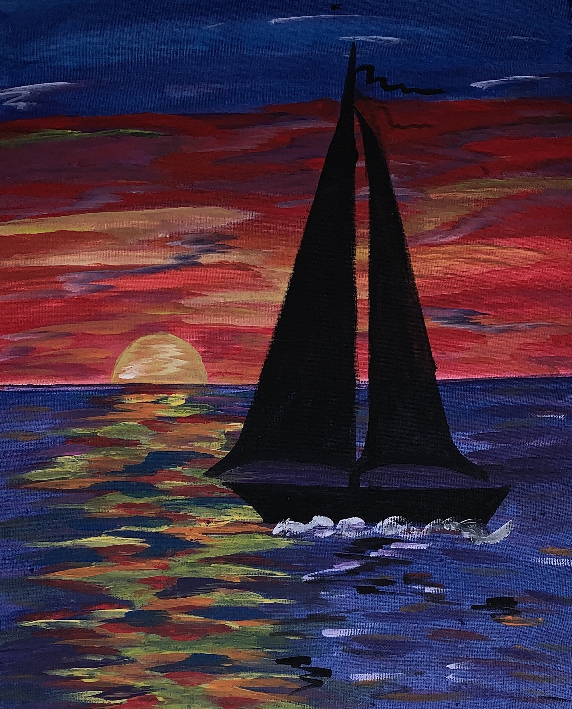
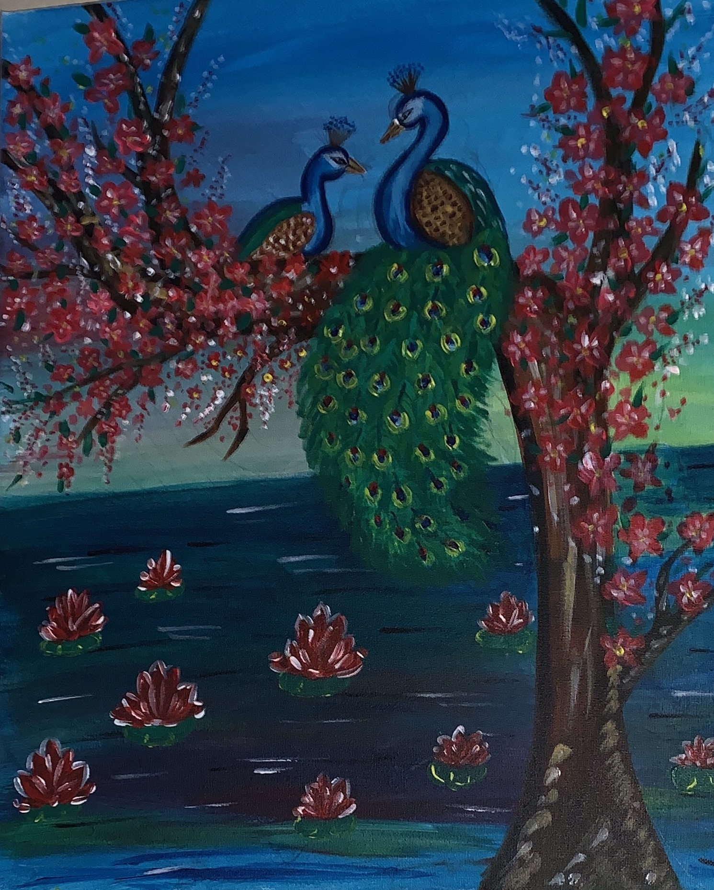
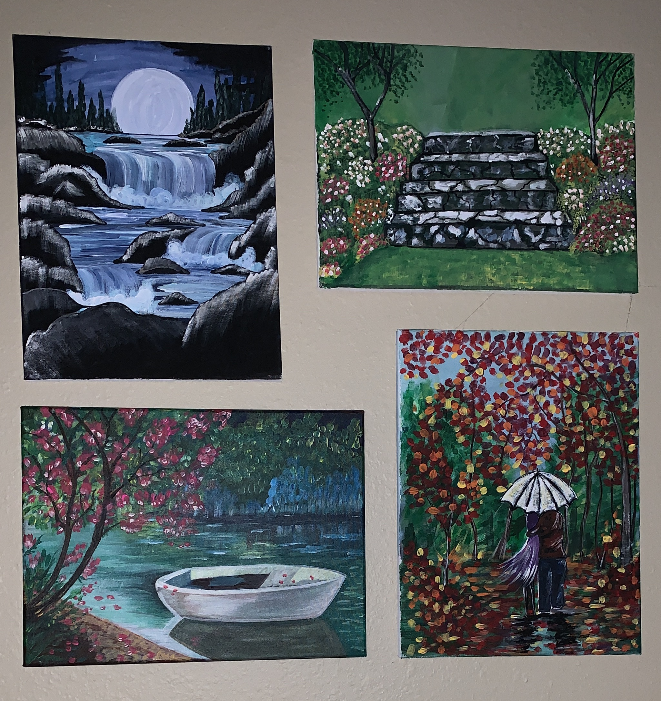
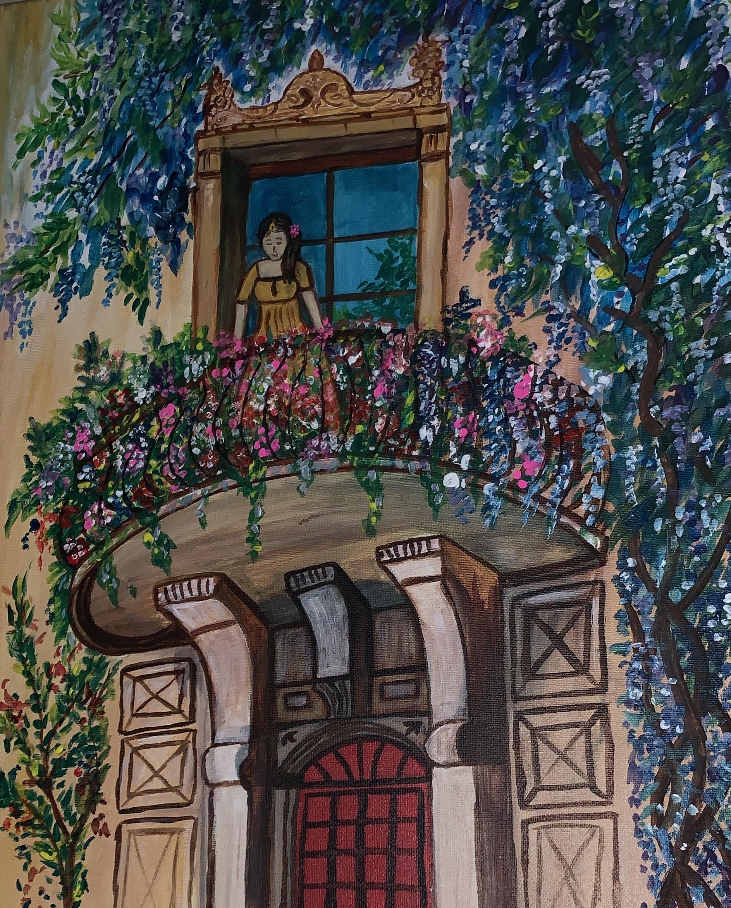
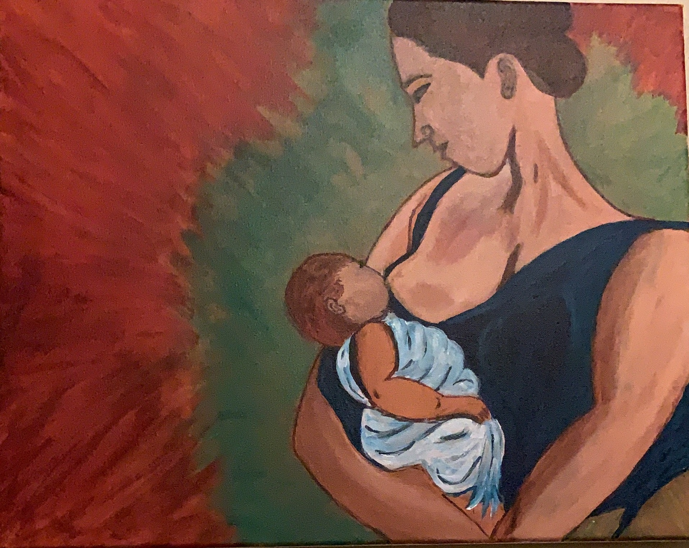

Growing up, I was always a little artistic; I used to draw + make dioramas quietly in my room– it was a way I could relax from the busy-ness of grade school + my large family. In 3rd grade I won the art contest for my drawing of “what my family means to me” (It was a drawing of us eating Sunday dinner together in the dining room and my dad still has it framed + hung there to this day).
I was always trying to figure out something new to try, artistically. The creating continued in high school where I would collage with my buds on poster board on the weekends until three in the morning. We were obsessed with cutting out the right words + images from magazines to show how we were feeling at the time (or how we wanted to feel). Little did I know, I was actually creating a vision board.
Throughout college and after, I continued to dabble in sketching and painting, but nothing of a consistent, concrete nature. I would just pick it up now and again when I had some time.
Here are some of my art works..
Sun Set Sailing Boat:
This was the painting i did at the very beginning! I was inspired my the painting Sailing Boat and i tried to replicate it which ended to be the picture above !!
Peacock Love:
This painting is a little special for me.I made this for my husband as our Anniversary gift :) Unforgetttable Painting.Memories flowing through...
Its Spring Already!!
These paintinga are my Lovely daughter's all time favourite.This combo painting has always been our living room decor since it was painted.
Girl in a balconey:
This is by far the toughest i have ever tried.It nearly took three hours for me to complete this piece.And i felt very proud once i was done.Its all learning..
MotherHood:
Yet another painting very close to my heart.Painting says it all.
These paintings have always made me happy.It has become a part of my life.In the recent days my little daughter has started drawing too.I will update her pictures soon.